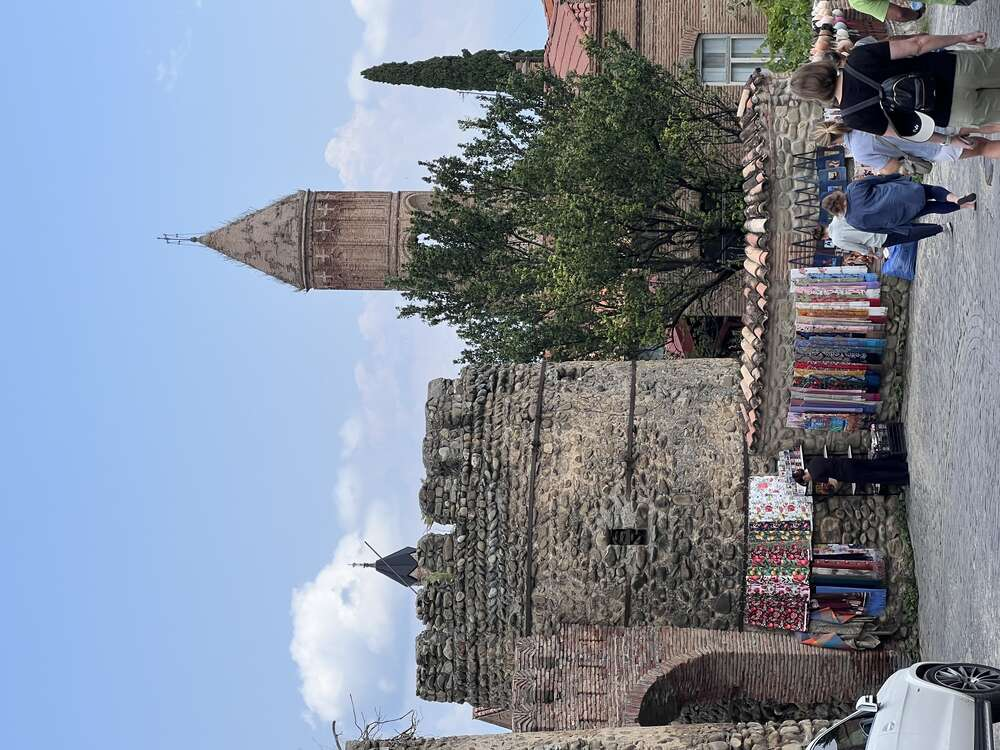
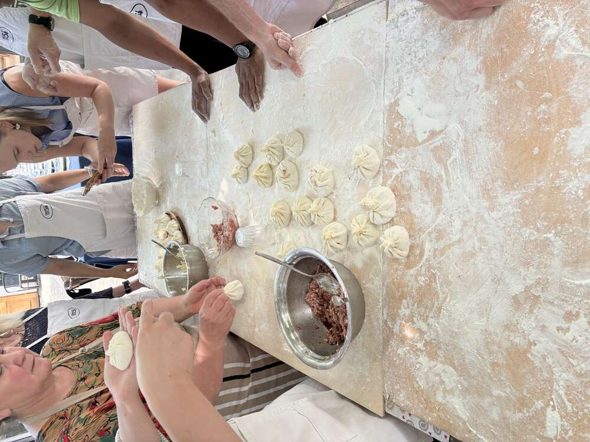
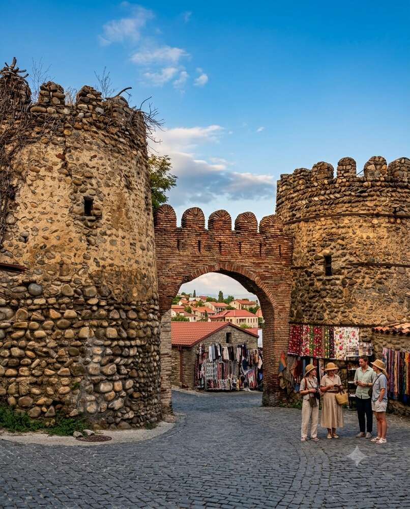
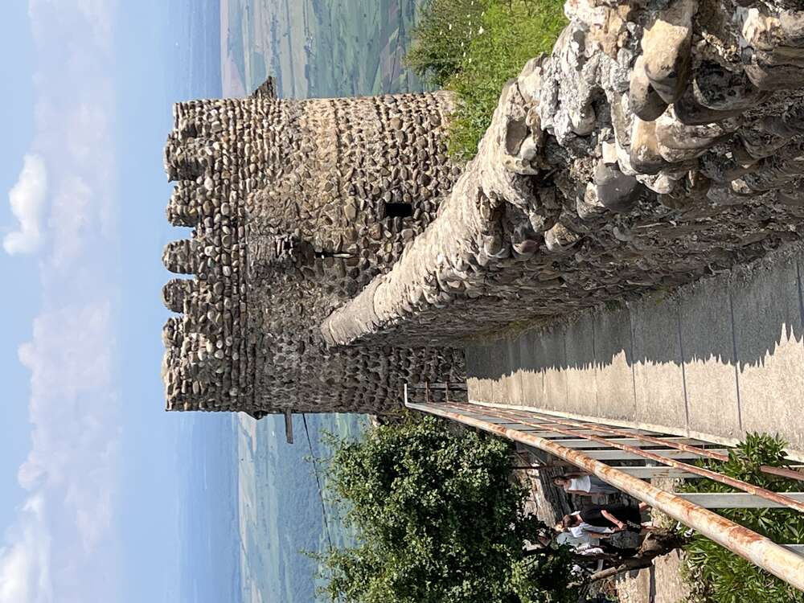
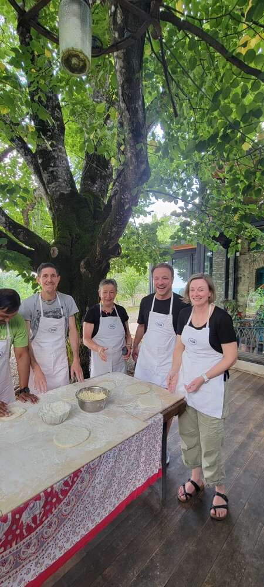
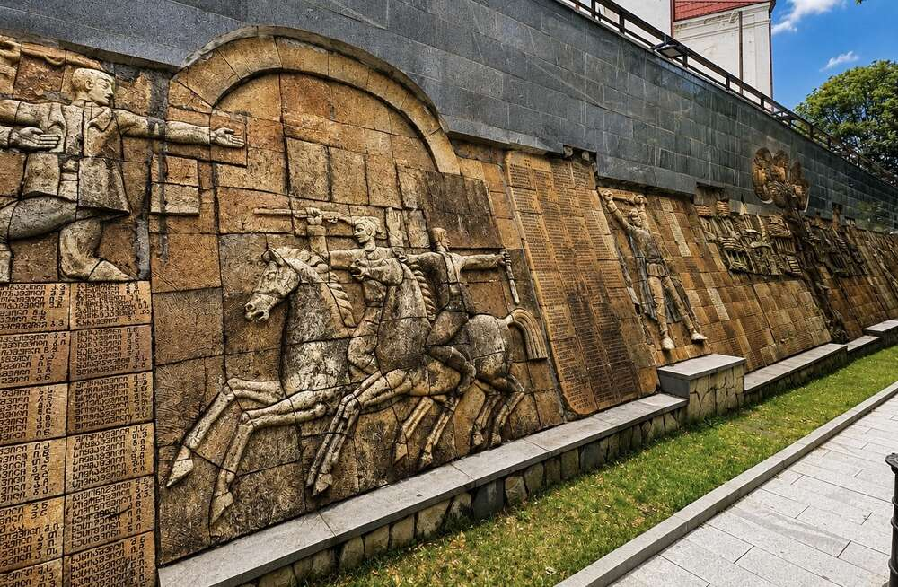
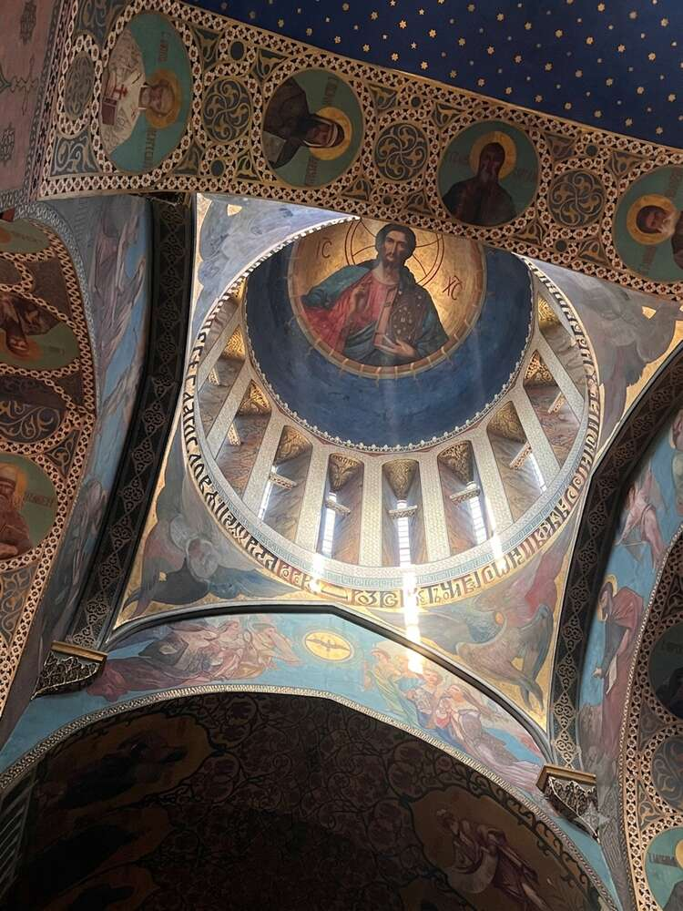
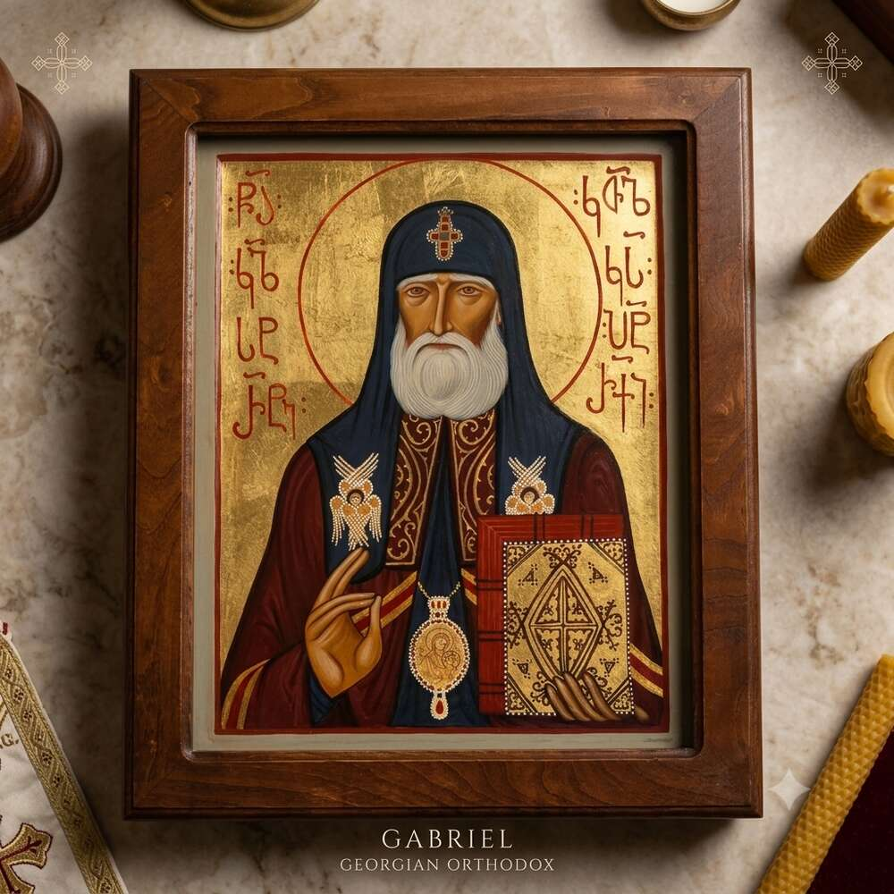
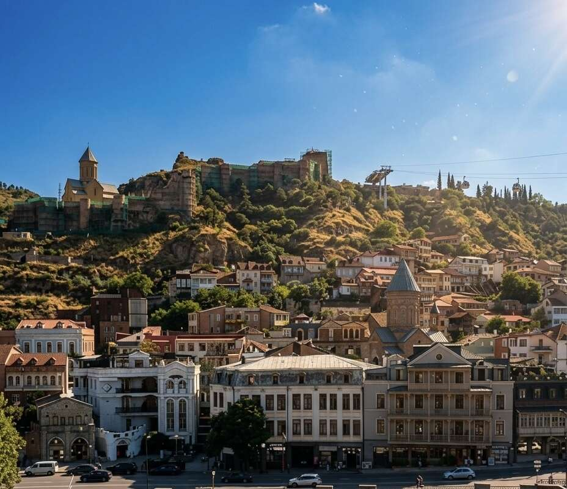

From Telavi onward to Sighnaghi, the “City of Love” on the hill above the Alazani Valley, followed by a khinkali cooking class.
Sighnaghi: Perched on a mountain spur above the Alazani Valley, with views stretching to the snow-capped peaks of the Greater Caucasus – on a clear day supposedly all the way into Russia. The city wall with its 23 defensive towers was built in 1762 under King Erekle II, originally as protection against raids by Dagestani mountain tribes from the north. Today Sighnaghi markets itself as the “City of Love”: the registry office is open around the clock, even for foreign couples – a clever tourism slogan to which the little Kakheti town owes most of its present-day reputation.

One of the seven gates in the 4.5 km defensive wall – just beyond it, the first souvenir stalls with textiles and handicrafts, a seamless transition from fortress to pedestrian zone.

The accessible walkway along the city wall – from up here the view sweeps far across the Alazani Valley. Of the original 23 towers, most have survived to this day and some have been restored.

View of one of the defensive towers and the church steeple in the town center – in front of it, a stall with embroidered tablecloths and scarves of the kind found all over the old town.
War memorial: In a small park behind the National Museum stretches a relief wall a good 20 meters long, commemorating the Georgian Red Army soldiers who fell in the Second World War, alongside long lists of names of the fallen from the surrounding villages. One of the few places in Sighnaghi that points not to romance but to the country’s wartime history.

Detail of the relief wall: mounted soldiers, interspersed with lists of names of the fallen from the surrounding villages, carved in stone.

Classic souvenir photo: a white, fluffy sheep’s wool hat borrowed from a market stall – a bit silly, but for exactly that reason an obligatory stop.
Khinkali: Georgia’s best-known dumpling, originally from the mountain regions of Khevsureti and Pshavi in the north of the country, where it served as a hearty, easily portable meal for shepherds and travelers. They are usually filled with seasoned minced meat (beef, pork, or a mixture) and plenty of broth, which stays sealed inside the dough as they cook – which is why khinkali are traditionally eaten with the hands: grip the ridged “handle” at the top, take a careful first bite, slurp the broth, and only then eat the rest. Eating the dough knot itself is considered impolite, and it traditionally stays on the plate – the number of leftover knots jokingly serves as a tally of the khinkali consumed.

The characteristic pleats are formed by pinching the edge of the dough together from the outside in – a well-folded khinkali traditionally has 18 to 20 pleats, and in many Georgian families they really do count.

Preparing the dough: thinly rolled-out circles that are then spread with the meat filling and closed into the characteristic bundles.

The whole travel group in aprons under the walnut tree – cooking together turned out to be one of the most convivial parts of the entire trip.
Tbilisi: After the border crossing and the Kakheti wine region, the arrival point of the trip – a city that, according to legend, was founded by King Vakhtang Gorgasali in the 5th century, when his falcon plunged into a hot sulfur spring while hunting. “Tbili” means “warm” – hence the name. Persians, Byzantines, Arabs, Mongols, and Russians have all left their mark here, which gives the old town its layered character to this day.

The leaning clock tower of Rezo Gabriadze’s puppet theater – not a historic structure at all, but designed by the puppeteer himself only in 2010 and deliberately built askew, as a stylized homage to the crooked old-town houses all around. On the hour, an angel steps out of a small door and strikes the bell with a hammer; at noon and at 7 p.m. a mechanism performs the puppet show “The Circle of Life”.

At the base of the clock tower: a ceramic mosaic hand-painted by Gabriadze himself, made up of countless small individual tiles – grapes, animals, ornaments, each tile its own little picture. It is precisely this playful, artisanal attention to detail that makes the tower more than just a curiosity.

The Bridge of Peace (2010, Italian architect Michele De Lucchi) over the Mtkvari – initiated by President Saakashvili as a gesture of reconciliation after the Georgian-Russian war of 2008. In the evening, some 30,000 LEDs transmit encrypted light messages in Morse code, encoding the chemical elements found in the human body – symbolism for the idea that, in the end, all people are made of the same building blocks. Because of its shape, locals have given it the mocking nickname “Always Ultra”.
Old town churches: Several churches in the old town still display well-preserved interior frescoes, classically rendered with gold backgrounds and Byzantine-influenced imagery.

Apse fresco of the enthroned Mother of God, flanked by angels – a classic Deesis arrangement with a gold background and floral scrollwork ornaments in the vault.

Saint Queen Ketevan of Kakheti (c. 1560–1624) – in 1614 she went into Persian captivity as a voluntary hostage to avert an attack on her country, and in 1624 she was tortured to death for refusing to convert to Islam. Her relics still rest beneath the altar of the Alaverdi Cathedral, not far from the route of the past few days. Part of her arm reached Goa in India via Portuguese monks in the 17th century and was only returned to Georgia in 2021.

Christ Pantocrator in the dome, surrounded by a deep blue, star-spangled vault – one of the most striking combinations of icon painting and decorative ornamentation in Tbilisi’s old town.

One of the many small bronze figures scattered around the old town, inviting you to linger – here a boy sitting casually on a stone. Tbilisi has a soft spot for exactly these unobtrusive, humorous everyday sculptures in its streetscape.

“La Bodega Historica”: a wine shop in a vaulted cellar, crammed with bottles, historical equipment, and curiosities – half shop, half small museum. Cellars like this define the look of the old-town lanes around Leselidze Street.
Souvenirs with substance: Alongside wine and magnets, the old town also offers more sophisticated handcrafted keepsakes – icon painting and watercolor art that go far beyond the usual shelf of dome-shaped kitsch.

Hand-painted icon of Saint Gabriel in the Georgian Orthodox tradition – gold background, gold-leaf halo, Old Georgian lettering. In Georgia, icon painting remains a living craft to this day, not merely museum art.

Watercolor illustration of three musicians with duduk and doli drum against the backdrop of Tbilisi’s old town, with the city wall behind them – a small piece of local color to take home, well away from the standard postcard.

The characteristic brick domes of the sulfur baths in the Abanotubani district – this, legend has it, is where King Vakhtang’s injured falcon plunged into the hot spring. The baths have been in operation since at least the 5th century; Alexandre Dumas and the poet Pushkin already bathed here.

View up to Narikala Fortress (3rd/4th century, founded under Persian-Sasanian rule) high above the old town, complete with the cable car from Rike Park. The name comes from Persian and means “impregnable fortress” – in Georgian it was originally called the “Fortress of Envy”. A lightning strike destroyed the powder magazine and large parts of the complex in 1827; since then it has been mostly a ruin, but freely accessible.
Street art: In between the historic sights, the old town keeps surprising you with everyday humor – for instance a decommissioned small van, completely repurposed as a rolling flower box and decorated with a small mural.

Art meets recycling: an old small van whose cargo bed has been entirely planted over – a small, lovingly tended detail at the edge of the old-town lanes.